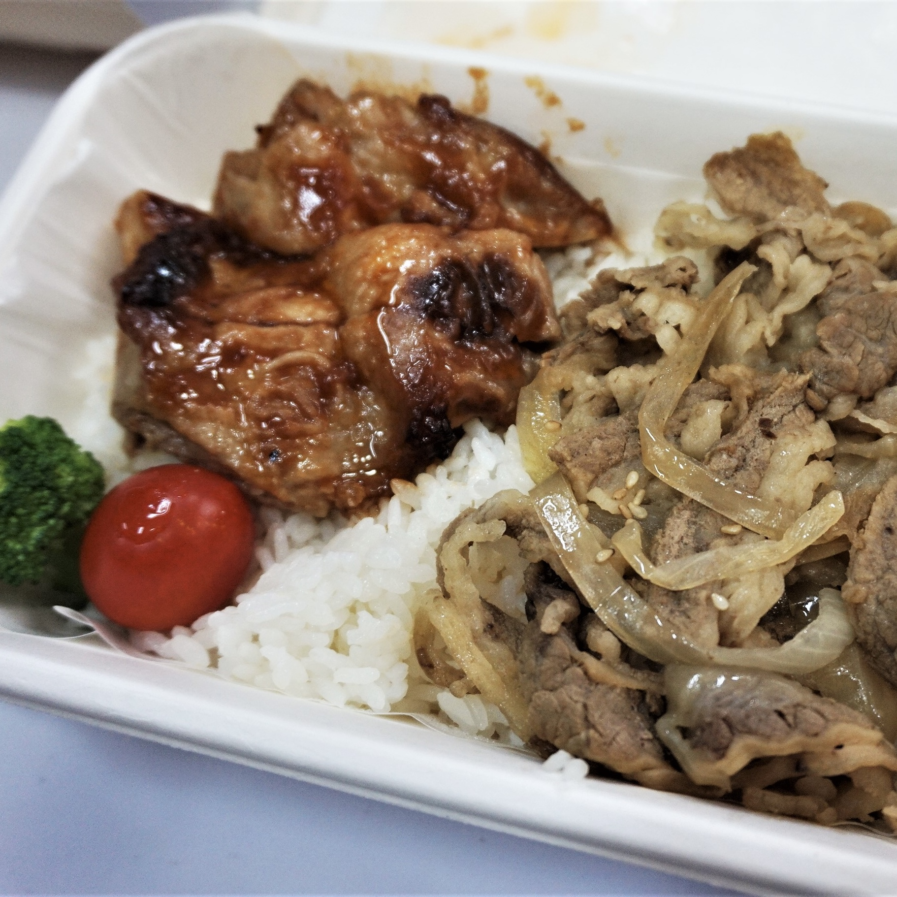
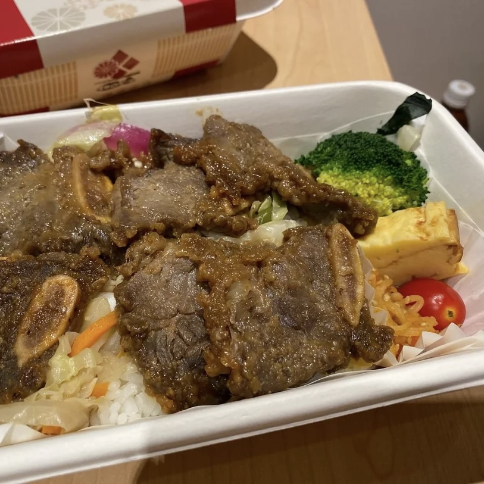

Wada Bento
Welcome to the legendary bento vending machine, where deliciousness awaits—if you can survive the long queue! Each colorful bento box promises a taste sensation, but be prepared for the agony of potentially finding your favorite sold out.
Location
G/F, Block S, United Christian Hospital, 130 Hip Wo Street, Kwun Tong, Kowloon
Recommendations

Yuzu Chicken and Beef Bento
‚ÄúI found the self-service setup super cute and convenient, so I had to try it since the prices were great! üç±üí∞ The fancy packaging even comes with chopsticks! ü•¢ Plus, there's a paper inside to keep things fresh‚Äîhow thoughtful! Both boxes feature cherry tomatoes and broccoli, with nice chewy rice. üçÖü•¶ The first one has chicken and beef. The veggies are fresh, and the yuzu juice is super refreshing! For this price and quality, it‚Äôs a lunch miracle! üôå‚Äù
